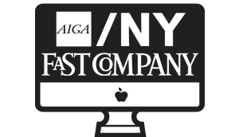

DDC New York Chapter / Session 4 / Oct. 1, 2013
The motion to be debated:
“Designers should lead companies.”
Designer's have long been asking for a seat at the executive table. These days, any credible board room is well stocked with c-suite level creatives (CMO, CCO, CDO); but now we want the throne!
The Designer/CEO is the business worlds latest mutation. Will it prove unviable, only to whither and die? Is this a new species built to thrive in a creative economy? Or is has the designer's DNA always been an essential piece of executive success?
Come watch as our panel of pros, practitioners, and pundits have it out. Will the design industry be a fertile training ground for next gen creative execs or should designers stick to what they do best and leave the business to the MBAs?
When and Where:
Tuesday, Oct. 1st @ 6:30pm
@ Fashion Institute of Technology
Haft Auditorium 7th Ave & 27th Street
Moderated by
Debbie Millman
Sterling Brands
Dually serving as President of Design at Sterling Brands and as a voice for the graphic design industry, Debbie is thoughtful, informed, and nothing if not judicious. Debbie will keep the proceedings prompt, the fight fair, and the debate dignified.
Arguing For The Motion

Tina Roth Eisenberg
a.k.a. SwissMiss
You know her as SwissMiss, the mind behind the CreativeMornings event series, creator of TeuxDeux (the beautifully handy to-do app), and founder of Tattly (a "designy temporary tattoo shop"). But don't be deceived by the friendly demeanor — she has come from Brooklyn ready to battle. This Swiss is anything but neutral.
Rick Webb
Founder of Barbarian Group turned investor
Since co-founding Barbarian Group and growing it to a successful interactive agency, Rick has gone on to make his mark on the design and tech scene in New York and Beyond. He's done time as a consultant at Tumblr, partner at Quotidian Ventures, CEO of a Williamsburg Coworking space, and, it is rumored, on Rikers Island where he may or may not have led a Detainees Debate Club. He debates dirty, prison yard style.
3rd Debater TBA
Stay tuned...
Arguing Against The Motion
Craig Shapiro
GOOD Magazine, Collaborative Fund
Former President of Good Magazine, now funder of good things as founder/CEO of Collaborative Fund. Craig is all about celebrating and enabling the creative class and creating a collaborative future. He has an eye for what is to come, and he confidently foresees himself winning this debate.
Gadi Amit
President, New Deal Design
As pilot of one of the industry's most impressive outfits, Gadi has fearlessly led New Deal Design into collaborations with an impressive roster of clients, and in the process garnered enough awards to fill an Ikea showroom. He is a big proponent of working with your hands; either for designing beautiful objects or making intimidating gestures at opposing debaters. Watch out for the pointer finger of incontrovertibility.
3rd Debater TBA
Stay tuned...
Sponsored by
AIGA/NY & Fast Company
This session of DDC is a proud preamble to the FastCo Innovation By Design Conference